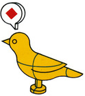

A cone amid the polar waste.

Shea Zellweger designed the Flipstick alphabet to encodes the logic relationships of
the binary table, it uses a special set of letter-shapes to symbolize 16 binary connectives. These letter-shapes are subjected to a system of flips, rotations and counterchanges.

Roman numerals are loaded with difficulties because they do not lay bare, in any transparent way, the interrelations among the number values. Notice, instead, that we use Arabic numerals when we build a multiplication table. When modern logic uses "dot, vee, horseshoe" to express "and, or, if" it also does not lay bare the rich web of interrelations that occupy the 16 connectives taken as a total system. Unfortunately, symbolic logic is miles away from coming up with its own multiplication table.
We have such high standards for number symbols, but it is odd indeed that the standards used for logic symbols are still so much lower.
(A, B) is for any two atomic sentences. (?) is for Negation (N) for its Abscence (O). Substitute letter-shapes on the Flipstick for the asterisk. Letter-shapes posses combinations of stems that act on (TT, TF, FF, Ft); clockwise from the upper right. Each stem stands for (T)rue. (o) is FFFF; (d) is TFFF; (q) is FTFF; (p) is FFTF; (b) is FFFT; (h) is FTTT; (x) is TTTT; etc. So, (A o B) is (A contradiction B); (A x B) is (A tautology B); (A d B) is (A and B); etc.

| T | x | OR | ɥ |
| NAND | h | XOR | z |
| -> | 0xc | q | u |
| NOT p | ↄ | NOT <- | b |
| <- | 0xe | p | c |
| NOT q | n | NOT -> | q |
| <-> | s | AND | d |
| NOR | p | F | o |
- NA Flip the Flipstick from left to right.
- NB Flip the Flipstick from top to bottom.
- NA,NB Rotate the Flipstick 180 degrees.
- N* Find counterchange mate symmetrically across the center of the Flipstick..
A certain enchanted forest is inhabited by talking birds.
Combinatory Forests are inhabited by talking birds, which speak words represented here by shapes, or groups of shapes delimited by parentheses. Avian dialog demonstrates that even without anything as crude as digits and operators, arithmetic and computation can emerge. To find examples of combinatory logic used in practice, see rewriting programming.
A talking bird, given some words, yields a combination of those words, we always listen to the left-most bird first.
T▲(◆●) • ◆●▲C(WK)x(yz)

▲ The Bekimet Forest
Within the Bekimet forest, we find the B, KI, M, and T birds. Each bird listens to a phrase, and answers with another. The first bird that we observe is the Mockingbird, which repeats the first word.
M▲ • ▲▲ W(WK)x
The second bird that we observe is the Kite, which discards the first word.
KI▲◆ • ◆ K(WK)xy
The third bird that we observe is the Thrush, which swaps the first and second words, notice how parenthesized words count as a single word.
T(▲▲)◆ • ◆(▲▲) C(WK)(xx)y
We can't quite make out the fourth bird, but we observe that it is the Bluebird, which is also found in the next forest, so let's continue.
| Mockingbird | x x y z | Duplicates the first word |
|---|
| Kite | y z | Discards the first word |
|---|
| Thrush | y x z | Swaps the first and second words |
|---|
◆ The Becekew Forest
Within the Becekew forest, we find the B, C, K, and W birds. The first bird that we observe is the Warbler, which repeats the second word. This bird's song is similar to the Mockingbird, which repeats the first word.
W▲◆ • ▲◆◆ Wxy
The second bird that we hear is the Kestrel, which discards the second word. This bird's song is similar to the Kite, which discards the first word. Here is the Kestrel, followed by the Warbler, notice how we always listen to birds in a sequence from the left-most bird first.
KW▲◆● • W◆● • ◆●● KWxyz
The third bird that we hear is the Cardinal, which swaps the second and third words. This bird's song is similar to the Thrush, which swaps the first and second words. Here is the Cardinal, followed by the Kestrel, notice how the effect of these two birds could be done by the Kite.
CK▲◆● • K◆▲● • ◆● CKxyz
The elusive Bluebird takes three words, and parenthesizes the third word into the second word. It is used to "chain" words together, for example, something like "B (increment) (double) number", becomes "(increment (double number))".
B▲(◆◆)(●●) • ▲(◆◆(●●)) Bx(yy)(zz)
| Warbler | x y y z | Duplicates the second word |
|---|
| Kestrel | x z | Discards the second word |
|---|
| Cardinal | x z y | Swaps the second and third words |
|---|
| Bluebird | x (y z) | Composition of x to y to z |
|---|
● The Sekei Forest
Within the Sekei forest, we find the S, K, and I birds. The simplest of these birds, appears to have no intelligence at all, and so it is called the Idiot bird since its response to hearing any word, is that same word.
I(▲◆) • (▲◆) (WK)(xy)
The Kestrel is also found in this forest, but we're already familiar with this one. Let's take a moment to see how words can be grouped by parentheses and transformed as if they were a single word. For instance, the Kestrel discards the second group of parenthesized words.
K▲(◆◆)(●●) • ▲(●●) Kx(yy)(zz)
The Starling applies the first and second words to the last, then applies the first result to the second result.
S▲◆● • ▲(●)(◆(●)) B(B(BW)C)(BB)xyz
| Idiot | x | x | Returns its word |
|---|
| Starling | x y z | x z (y z) | Returns x(z) applied to y(z). |
|---|
Conversion
Although these birds have been investigated somewhat over the past eighty years, they have for the most part been viewed as rather obscure and irrelevant creatures. It is a challenge to find any way to translate their behavior into something suitable for human perception.
| Bekimet-Becekew | Becekew-Sekei | Sekei-Becekew |
|---|
| KI | K(WK) | B | S(KS)K | S | B(B(BW)C)(B B) |
|---|
| M | W(WK) | C | S(S(K(S(KS)K))S)(KK) | K | K |
|---|
| T | C(WK) | K | K | I | WK |
|---|
| | W | SS(SK) | | |
|---|
And for that I turned to programs, and began to study just what programs in the wild might do.~
incoming: reversible computing thuesday